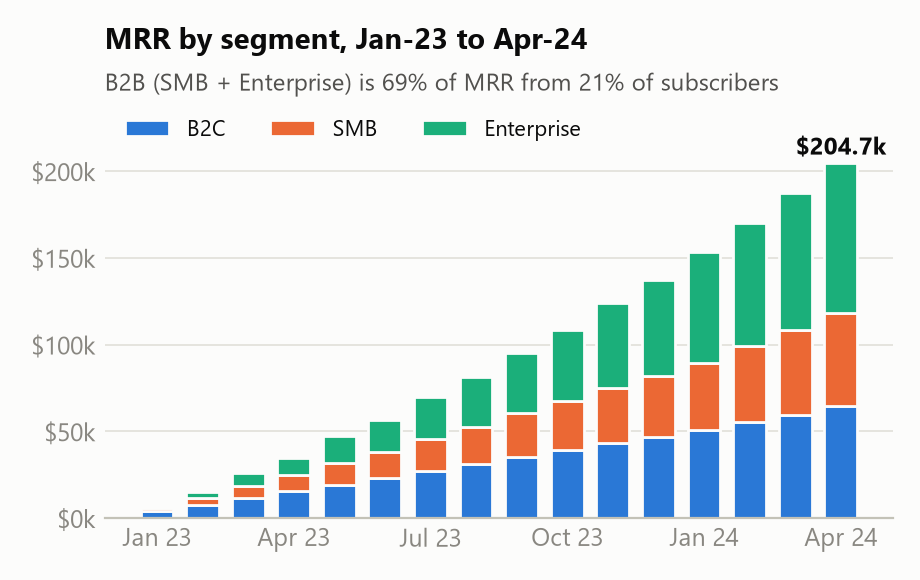
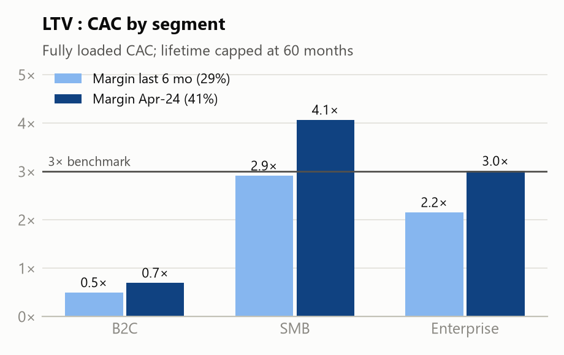
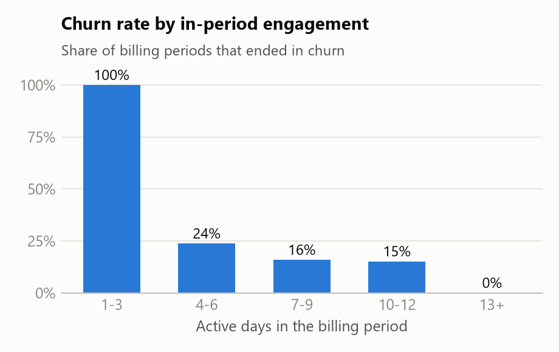
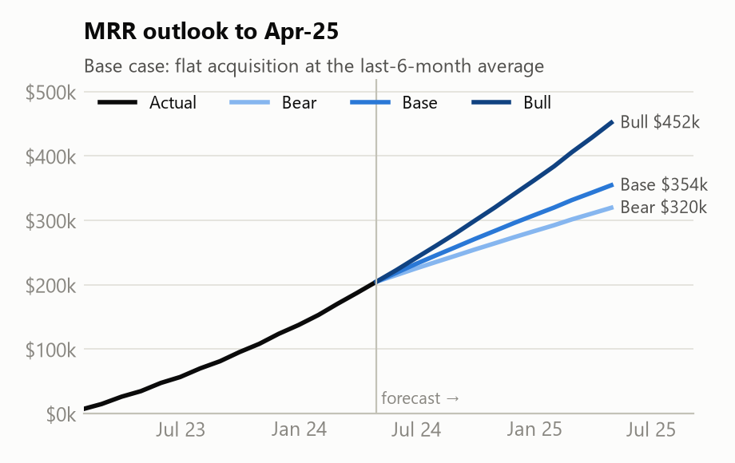

Platzi: crecimiento acelerado, pero la retención B2C define si es rentable
Conclusión
- El crecimiento es real y los márgenes escalan. El MRR llegó a $204.7k (×5.9 en 12 meses) y el margen bruto pasó de negativo a 41%, porque los ingresos crecieron más rápido que los costos. La empresa aún tiene pérdida operativa (−$78k en abr-24), pero se ha reducido ≈ $9k por mes desde nov-23.
- B2B es el motor económico; B2C pierde dinero en cada adquisición pagada. SMB y Enterprise generan 3–4× su costo de adquisición con el margen actual. B2C recupera solo 0.5–0.7×.
- El churn es la fuga, y se ve venir. Los clientes que casi no usan el producto durante su período de facturación son los que cancelan. Un programa de alerta y rescate a mitad de ciclo es la palanca más rápida y barata (+$7.7k de MRR en 6 meses).
1,941
Suscriptores activos
90.1%
Tasa de renovación Q1-24 (B2C 89.5% · B2B 93.8%)
63.7%
NDR, últimos 12 meses (81.6% a 6 meses)
41%
Margen bruto, abr-24 (29% prom. 6 meses)
Respuestas a las cuatro preguntas
| Pregunta | Respuesta | Cómo se mide |
|---|
| 1. MRR, abril 2024 | $204,709: B2C $64,365 (31%) · SMB $53,869 (26%) · Enterprise $86,475 (42%) | Suma del MRR mensualizado de las suscripciones activas al 30-abr-24 (planes anuales ÷ 12) |
| 2. Retención Q1-24 | El 90.1% de las renovaciones se concretó. B2C 89.5% vs. B2B 93.8% (SMB 93.8%, Ent 93.9%). En $: 92.2% · 89.5% · 95.2% | Suscripciones cuyo período terminó en ene–mar 24: renovadas ÷ (renovadas + canceladas) |
| 3. Suscriptores activos, abr-24 | 1,941: B2C 844 mensuales / 692 anuales · SMB 113 / 190 · Enterprise 12 / 90 | El período de la suscripción cubre el 30-abr-24 |
| 4. NDR, últimos 12 meses | 63.7% (retención bruta 59.9%). B2C 43.1% · SMB 89.8% · Enterprise 71.8% | MRR de abr-24 ÷ MRR de abr-23 de los 417 clientes activos en abr-23. Base pequeña y temprana; a 6 meses (1,124 clientes): 81.6% |


Lo que dicen los números
1 · B2B sostiene el negocio: Enterprise impulsa el crecimiento del MRR y SMB la expansión.
B2B aporta el 69% del MRR con el 21% de los suscriptores; en 12 meses Enterprise sumó +$76k de MRR y SMB +$45k. Con el margen actual de 41%, SMB devuelve 4.1× su costo total de adquisición (recuperación ≈ 10 meses) y Enterprise 3.0× (≈ 12 meses); con el margen conservador de 6 meses y considerando el churn, la recuperación sube a ≈ 17 y ≈ 21 meses. SMB además genera 4× más ingreso por expansión que Enterprise. La contracción es mínima (< 1.2% del MRR inicial); lo que reduce el NDR es el churn.
2 · La adquisición pagada de B2C hoy no se recupera.
B2C recibe el 52% del presupuesto de marketing ($790k de $1.52M). Conseguir un cliente B2C que pague cuesta $392, y ese cliente genera ≈ $200–280 de utilidad bruta en toda su vida. Los "nuevos usuarios" de marketing son registros: solo ~10% se convierte en suscriptor pagado, por lo que el costo de $37 por registro parece engañosamente bajo. Los suscriptores B2C mensuales cancelan ≈ 10% al mes, y ninguno se ha cambiado al plan anual, que retiene mucho mejor.


3 · El churn es predecible, pero solo dentro del período de facturación.
Todos los períodos con ≤ 3 días activos terminaron en cancelación; ninguno con 13 días o más (los datos simulados hacen esta señal más nítida de lo que será en la realidad). El uso del mes anterior no predice el churn de este mes, así que hay que actuar a mitad de ciclo. De las 1,024 suscripciones que renuevan en may-24 ($87.8k de MRR), 72 son de alto riesgo; la lista nominal está lista para Customer Success. Advertencia: los datos registran el uso por período completo, así que la alerta de los días 10–15 debe validarse con datos de uso diario en el piloto.
4 · El apalancamiento operativo está funcionando.
Los ingresos crecieron 28× entre ene-23 y abr-24, mientras los costos de servicio crecieron 1.7×, lo que llevó el margen bruto de muy negativo a 41%. Hoy, cada dólar de MRR retenido se convierte en gran parte en utilidad bruta, lo que hace de la retención el uso más rentable del próximo dólar. Después de marketing y G&A el negocio aún pierde dinero (−$78k en abr-24; −$2.0M en 16 meses), pero la pérdida mensual bajó desde −$122k en nov-23.
Recomendaciones (ordenadas por esfuerzo vs. impacto)
| Iniciativa | MRR a 6 meses | NDR | Esfuerzo · plazo | Por qué |
|---|
| 1. Alerta de bajo uso a mitad de ciclo + rescate: identificar suscripciones con poco uso entre los días 10 y 15; mensajes en la app para B2C y llamada de un CSM para B2B. Empezar con la lista de may-24. | +$7.7k
(+2.7%) | +2.7 pp | Bajo · 1 mes | Basada en reglas, con datos que ya tenemos. Supone rescatar al 20% de los clientes señalados que iban a cancelar (rango 10–30% → +$3.8k a +$11.8k). |
| 2. Playbook de expansión y renovación B2B: revisiones trimestrales con SMB para crecer en licencias; acción de retención en la 2ª renovación de Enterprise, donde se concentra su contracción. | +$1.6k
(+0.6%) | +0.6 pp | Medio · 3 meses | Refuerza el segmento con la mejor rentabilidad por cliente; sin desventajas. |
| 3. Oferta B2C mensual → anual: plan anual prepagado ofrecido a usuarios mensuales activos. | −$0.9k
(−0.3%) | −0.2 pp
(+0.8 a 12 m) | Medio · equilibrio en ~9 meses | El churn anual es ~4%/año vs. ~10%/mes del plan mensual, pero cada cambio baja el MRR de $49 a $33. Aporta ≈ $72k de caja anticipada en 6 meses. Lanzar después de la #1. |
Asignación de capital: mantener plana la inversión en adquisición pagada B2C hasta que mejoren la conversión y la retención (meta LTV:CAC ≥ 3×), y dirigir el presupuesto incremental a B2B (SMB y Enterprise, 3–4× LTV:CAC con el margen actual).
Proyección a 12 meses (a abr-25)
Base: $354k de MRR (+73%), 3,119 suscriptores, suponiendo que la adquisición se mantiene en el promedio de los últimos 6 meses y que el churn sigue en sus tasas recientes (un escenario prudente). Pesimista: $320k (más churn, adquisición igual o menor, la mitad de la expansión). Optimista: $452k (la adquisición sigue creciendo y las tres iniciativas se cumplen). Validado sobre los últimos 6 meses, el error promedio del modelo fue de ~10% del MRR real (subestimó, porque el crecimiento se aceleró).
Supuestos y advertencias clave
- El MRR sale de las suscripciones; los montos de pagos son precios de lista y no reflejan los cambios de precio en B2B.
- CAC = gasto de marketing + ventas + una parte del G&A, ÷ nuevos clientes que pagan (no registros).
- Los costos de servicio (CS, infraestructura, contenido) se asignan según la participación en el MRR, por lo que todos los segmentos tienen el mismo margen %. El LTV se limita a 60 meses.
- El NDR a 12 meses se basa en 417 clientes tempranos (12 Enterprise); la vista a 6 meses es más robusta.
- Cada usuario = un cliente: los dominios corporativos mezclan segmentos, así que no se pueden reconstruir las cuentas B2B.
Próximos pasos
- Pilotear la alerta con la lista de may-24; medir la tasa de rescate frente a un grupo de control.
- Hacer un test A/B de la oferta anual (precio y momento) antes de lanzarla a todos.
- Agregar IDs de licencia y de cuenta para B2B, y el canal de origen de los clientes que pagan, para afinar el análisis de CAC y expansión.
- Dashboard interactivo (filtro por segmento, lista de riesgo de churn, simulador de escenarios): https://platzi-challenge-3wrgxevauckcvnh6rbdvaf.streamlit.app/. Modelo y SQL: ver los archivos adjuntos. Todas las cifras son reproducibles desde el pipeline SQL.